Four edges. Your arrangement.
Chat on the left. Notes on the right. A spot for music and terminal, without keeping everything on your desk.

OrbPeekWindows within reach. Room to focus.
Get OrbPeekPark the windows you don't need right now at the edge, leaving just a narrow preview. The center is for what you're doing.
Chat on the left. Notes on the right. A spot for music and terminal, without keeping everything on your desk.
Check a message or look something up. It's the actual window, ready to use. Move away and get back to your work.
Use OrbPeek across multiple displays. Keep useful windows at the edges of the screen you're working on.
macOS 14 or later · Free · Open source
brew install --cask zhiyozhao/tap/orbpeekHomebrew installations open directly, without the developer verification steps.
To update: brew upgrade --cask orbpeek, then reopen OrbPeek.
OrbPeek is not yet notarized by Apple. Try opening it once, then go to System Settings → Privacy & Security. Find the OrbPeek notice near the bottom, click Open Anyway, authenticate and confirm. On macOS 14 you can also Control-click OrbPeek in Finder, choose Open, then confirm again.
OrbPeek stays offline. No account or analytics. Screen Recording is only used for preview images, held in memory. No video or audio is recorded.
Made for macOS.